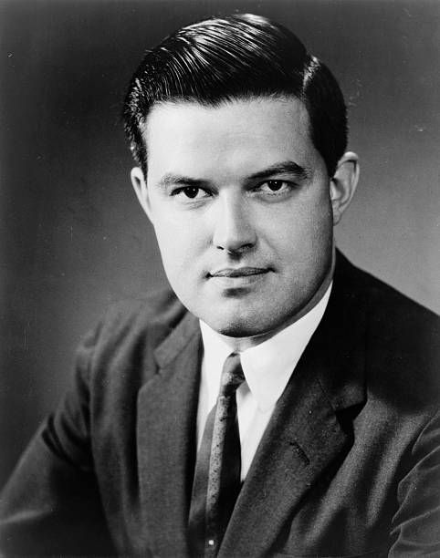

What the Church Committee Found
The Church Committee's investigation (1975-76) into CIA activities produced a specific finding about domestic media operations. The committee found that the CIA had established relationships with over 400 US journalists and media personnel — ranging from full-time employees to occasional paid assets — across major newspapers including the New York Times, Washington Post, and Time magazine, wire services AP and Reuters, and all three major television networks. These assets positioned stories, suppressed stories, wrote pro-CIA coverage, and discredited critics of CIA policy.
The programme was named "Mockingbird" — referring to the bird that mimics other species' calls. The CIA mockingbirds mimicked independent journalists while actually amplifying the CIA's preferred narrative. Frank Wisner, CIA Director of Plans (covert operations), is credited with initiating the programme in the late 1940s. He described his media asset network as his "Mighty Wurlitzer" — a propaganda organ he could play at will.
Carl Bernstein's 1977 Investigation
Carl Bernstein — one of the two Washington Post reporters who broke the Watergate scandal — published a 25,000-word investigation in Rolling Stone in October 1977 titled "The CIA and the Media." Drawing on CIA files and interviews with CIA officials, Bernstein documented: (1) Over 400 journalists had carried out assignments for the CIA; (2) The most valuable assets were those who worked for the most prestigious news organisations — New York Times, CBS, Time-Life; (3) The relationship often involved the knowledge and co-operation of editors and publishers including Arthur Hays Sulzberger (NYT) and Henry Luce (Time-Life); (4) The CIA paid journalists directly, provided cover stories for their foreign travel, and used them as couriers and intelligence gatherers.
When asked directly about the programme in Church Committee testimony, CIA Director William Colby confirmed it existed and that the CIA had "some associations" with journalists. He later stated in his memoir that the Church Committee investigation was incomplete — that the full scope of CIA media penetration was considerably larger than what the committee documented. The CIA's official internal position was that Mockingbird was "wound down" in the 1970s. No independent confirmation of this winding-down exists.
The Modern Version
The question is not whether Operation Mockingbird existed — it is confirmed. The question is whether it ended. GA researchers argue it never ended — it was institutionalised. The mechanisms changed: rather than individual paid journalist assets, the CIA now uses structural influence through: (1) CIA officers embedded as on-air consultants at NBC, CNN, and CBS (documented cases: John Brennan, James Clapper, Michael Morrell — all former intelligence directors hired as cable news analysts after retirement); (2) coordination with social media platforms on "counter-disinformation" (confirmed by Twitter Files); (3) the Intelligence Community's media relationships formalised through the National Security Agency's public affairs channels and through ODNI's media coordination.
The Twitter Files — Digital Mockingbird
The Twitter Files (2022-23) — released by Elon Musk after acquiring Twitter — documented that the FBI, DHS, CIA, and other intelligence agencies had direct back-channel communications with Twitter's Trust & Safety team, requesting suppression of specific accounts and specific content. The FBI was paying Twitter $3.4 million for agent time spent reviewing account suppression requests. This is Mockingbird 2.0 — not placing journalists in newsrooms, but directly controlling platform-level content moderation.
"Conspiracy Theory" — A CIA Coinage
The CIA produced Document 1035-960 in 1967 — a dispatch to CIA stations and bases instructing them on how to counter growing public suspicion about the Warren Commission and JFK assassination. The document instructs CIA assets to use the term "conspiracy theorist" as a pejorative against critics. This is the first documented use of "conspiracy theory" as a dismissive deflection. The term was coined as a CIA propaganda tool — to discredit anyone investigating CIA operations.